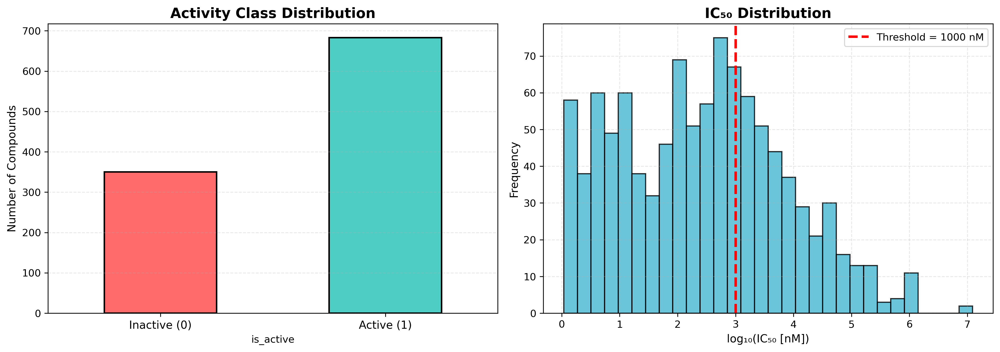
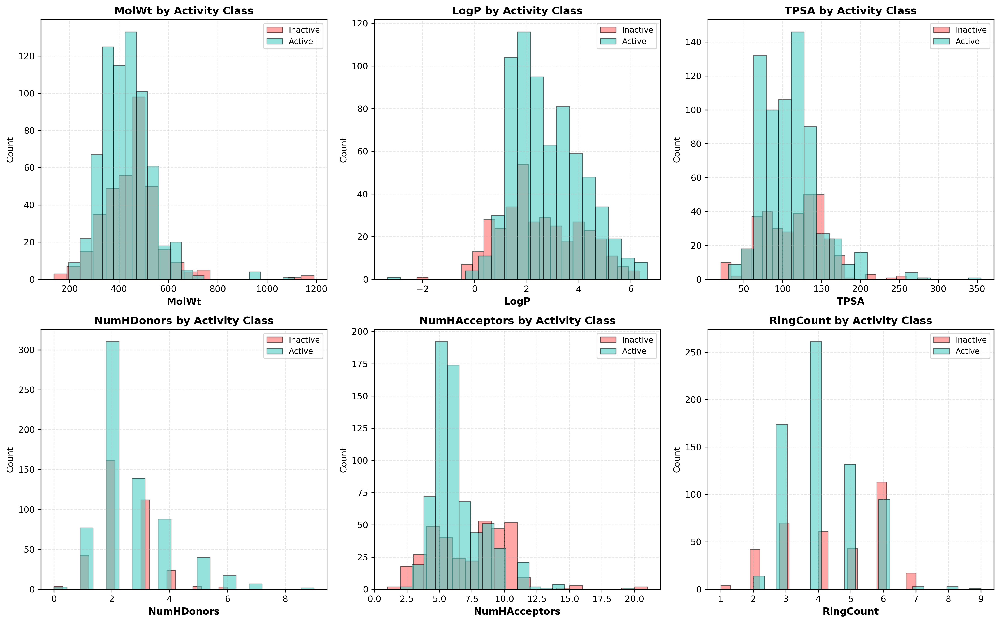
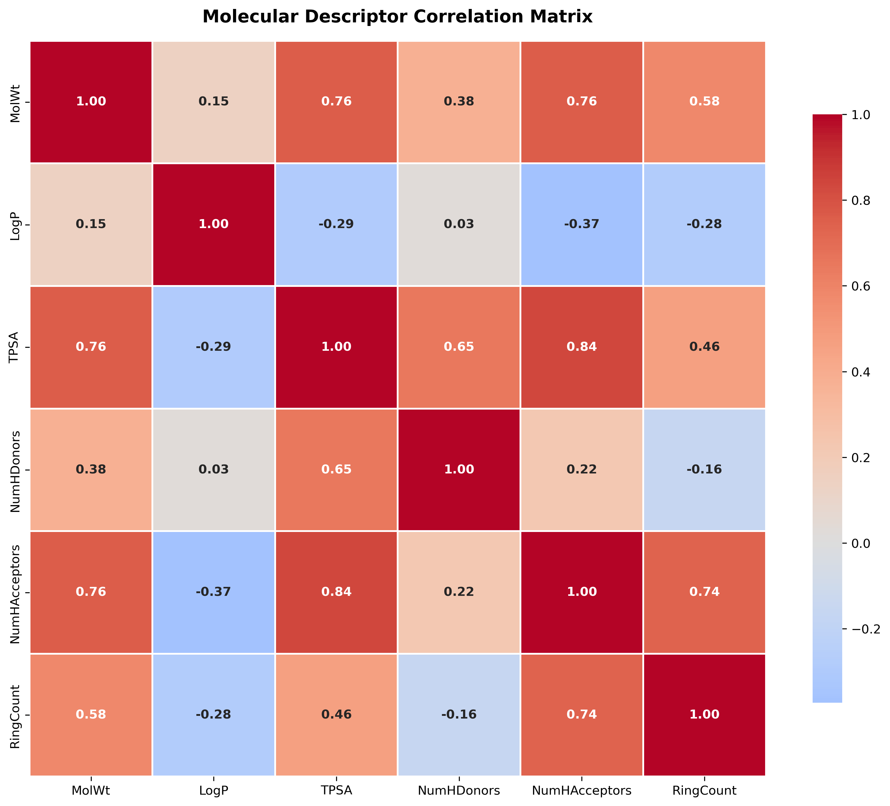
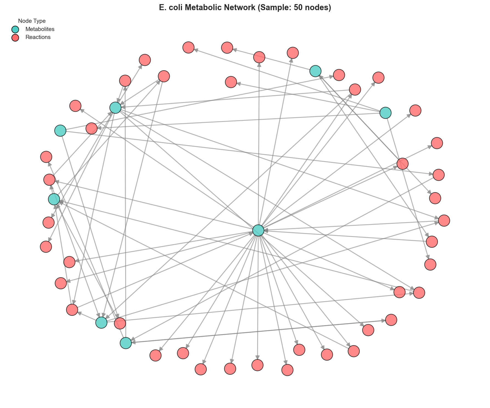
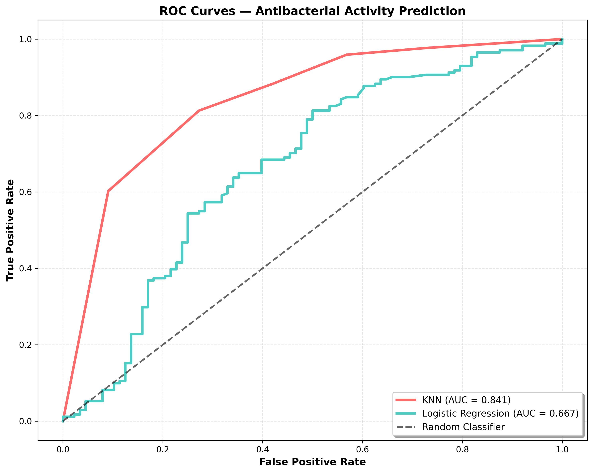
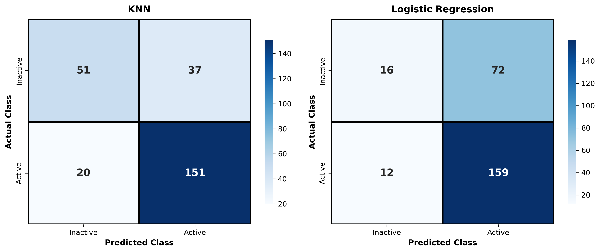
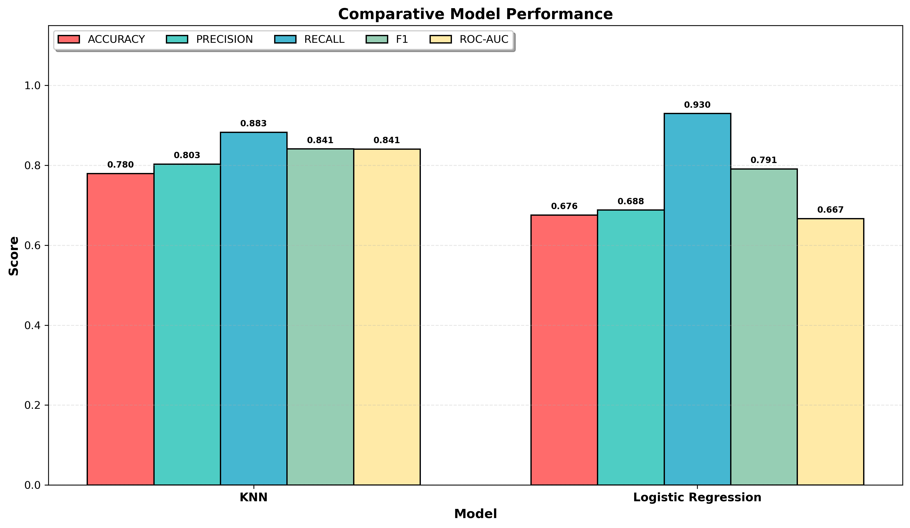
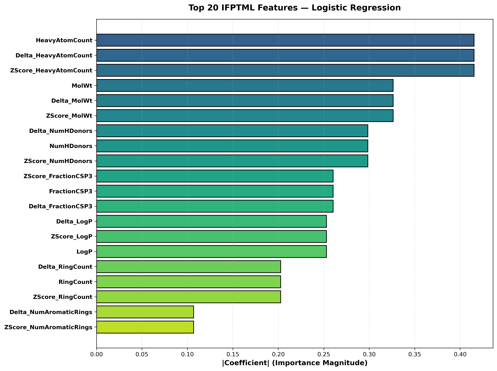

Machine Learning Study of Antibacterial Activity Against E. coli DNA Gyrase
This analysis applies the IFPTML methodology (Information Fusion based on Perturbation Theory and Machine Learning) to predict antibacterial activity of compounds targeting Escherichia coli DNA gyrase enzyme. The study combines molecular descriptors, perturbation analysis, and metabolic network topology to build robust predictive models.

The left panel displays the distribution of compounds classified as active vs inactive based on the 1000 nM IC50 threshold. The right panel shows the distribution of IC50 values on a logarithmic scale, with the red dashed line indicating the activity threshold.

Six key molecular descriptors are compared between active (green) and inactive (red) compounds. These physicochemical properties help distinguish effective DNA gyrase inhibitors from less potent compounds.

This correlation heatmap reveals relationships between molecular descriptors. Strong correlations (red) indicate features that provide similar information, while weak or negative correlations (blue) suggest complementary features.

This visualization represents the Escherichia coli metabolic network structure, where nodes represent metabolites and edges represent enzymatic reactions. Network topology features (degree distribution, density, centrality) are integrated into the IFPTML feature vector.

Receiver Operating Characteristic (ROC) curves plot the true positive rate against false positive rate at various classification thresholds. The Area Under Curve (AUC) quantifies overall model discrimination ability.

Confusion matrices display the breakdown of predictions: true positives (active correctly identified), true negatives (inactive correctly identified), false positives (inactive misclassified as active), and false negatives (active misclassified as inactive).

This bar chart compares five key performance metrics across both models: Accuracy, Precision, Recall, F1-Score, and ROC-AUC. Higher values indicate better performance.

This horizontal bar chart displays the top 20 most influential features from the Logistic Regression model, ranked by coefficient magnitude. Larger bars indicate stronger influence on antibacterial activity prediction.
The IFPTML methodology successfully integrates molecular descriptors, perturbation theory, and metabolic network topology to predict antibacterial activity against E. coli DNA gyrase with high accuracy.
KNN (k=5)
0.841
77.9%
1,033
This analysis demonstrates that computational approaches combining chemical information with biological network data can effectively identify promising antibacterial candidates, accelerating drug discovery efforts.